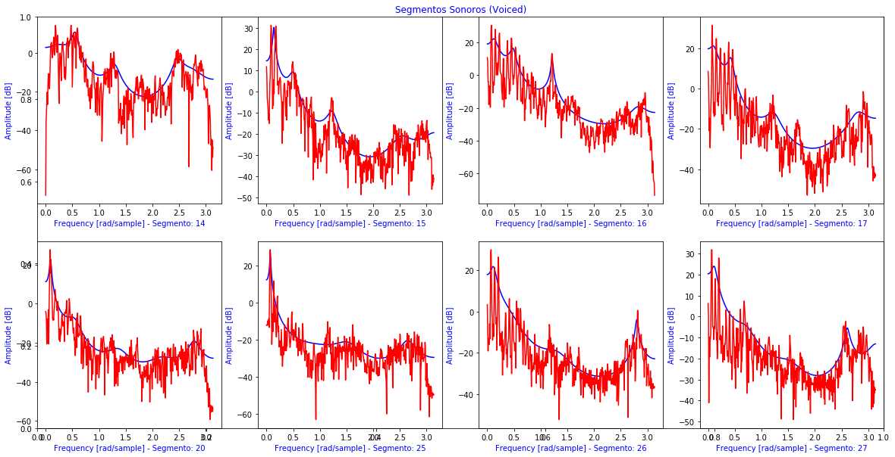

O áudio analisado refere-se ao trecho Camões utilizado na P2a.
O primeiro trecho refere-se à: Campos bem aventurados.
Onda sonora para áudio e primeiro trecho, energia para o primeiro trecho, segmentos sonoros (voiced) e surdos (unvoiced) para o primeiro trecho.
Limiar VAD 31.96840358867317
Limiar U/UV 34.66840358867317
Sonoros = 8 e Surdos = 8
Onda sonora para o áudio (completo) Camões de Beatriz.Onda sonora para o áudio (primeiro trecho) Camões de Beatriz.Energia para o áudio (primeiro trecho) Camões de Beatriz.

Espectro para segmentos sonoros (voiced) para o áudio (primeiro trecho) Camões de Beatriz.Espectro para segmentos surdos (unvoiced) para o áudio (primeiro trecho) Camões de Beatriz.